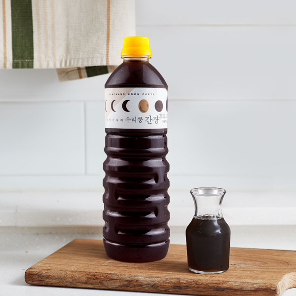
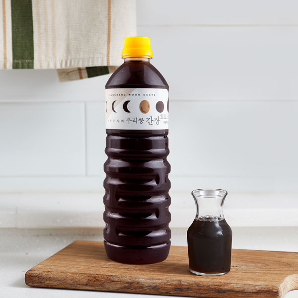

오징어 볶음
250,000
VND오징어 볶음+계란말이+김+반찬+공기밥

오징어볶음은 오징어를 주재료로 하는 한국 요리이다.
일반적으로 낙지볶음과 같이 고춧가루나 고추장 양념을 사용하여 맵게 먹는다.
1. 오징어를 손질한다. 손질된 오징어는 먹기 좋게 썬다.
2. 양파는 채썰기를 하되 좀 굵게 썬다. 당근 껍질은 제거한 뒤, 부채썰기나 나박썰기로 썬다.
3. 볼에 양념 재료를 모두 넣고 섞는다. 이때 매실청이 있다면 조금 넣어주는 것도 좋다.
4. 야채와 오징어가 모두 다 익었다면, 팬 하나에 야채를 모두 넣은 뒤, 양념을 넣고 볶는다.
5. 간을 보았을 때 간이 약하다면 국간장을, 단맛이 부족하다면 물엿이나 꿀을 넣어준다.


 
